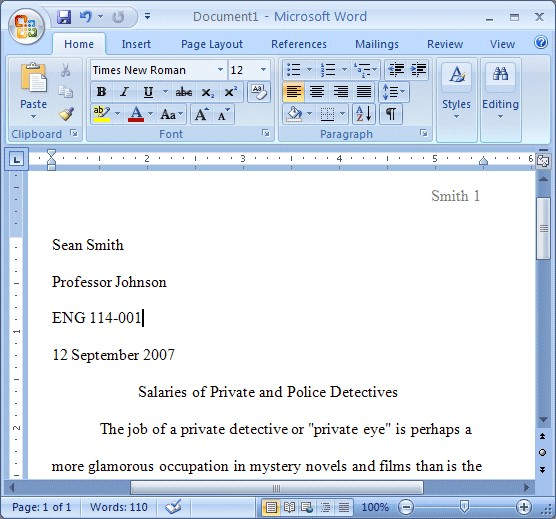
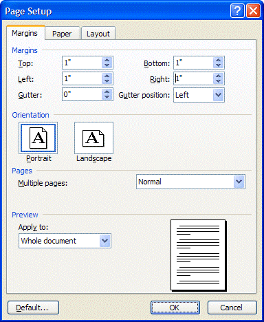
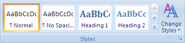
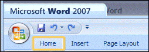
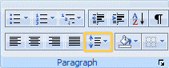
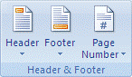
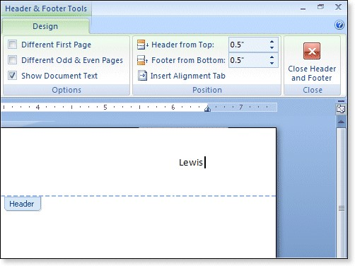
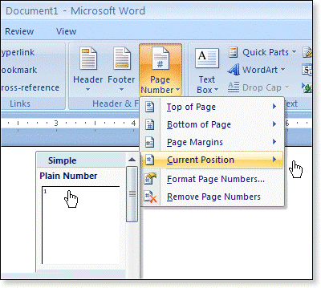
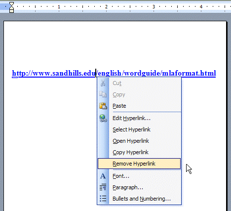

Basic Writing: Highschool
MLA Style Writing
Introduction
The Modern Language Association (MLA) specifies a standard format for essays and research papers written in an academic setting:
- One-inch page margins
- Double-spaced paragraphs
- A header with author's last name and page number aligned on the right margin one-half inch from the top of each page.
- Name of author, name of professor, title of course, date of paper on the first page of the paper.
- Citations to borrowed information in parentheses in the body of the paper and a works cited page beginning on a separate page at the end of the paper whenever the paper includes summaries, paraphrases, or quotations from other sources.
- Set the page margins to one inch.
- Set the line spacing to double
- Create a header with your last name and automatic page numbering.
- Enter the first page information
- Type your name and then press the Enter key once
- Type your professor's name, and then Enter.
- Type the course identification, and then Enter.
- Type the date. Press the Enter key once.
- Click on the Align Center icon on the formatting toolbar.
- Type the title of your paper, capitalizing the first word and all major words and proper nouns. Do not use italics, boldfaced type, underlining, or all caps to format your title. Do not type a period at the end of the title. Press the Enter key once.
- Click on the Align Left icon so that you will begin typing on the first line.
- Depress the Tab key to indent 1/2 inch to begin your first paragraph and begin typing your document. Be sure to press the Enter key once only when you have completed a paragraph: 
- Type the works cited page.
- Click the Align Center icon so that your title will be centered. Before doing so, be sure to click "Format" and then "Paragraph" on the menu bar and check your paragraph format to make sure that the first line of the paragraph is not indented. If it is, change the first line indent to "none" and click "OK" in the Paragraph dialog box.
- Type Works Cited (do not underline, boldface, italicize, or enclose the title in quotation marks).
- Press the Enter key once to begin a new line (your line spacing is already set at double).
- Click the Align Left icon or, from the menu bar, select Format and Paragraph, select the Indents and Spacing tab, and change Alignment to left.
- Select Format from the menu bar and Paragraph. In the Indents and Spacing section, click Special and then click Hanging.
- Type your first works cited entry in the MLA format.
- Remove the hypertext from the Internet address, if required.
Follow the steps below to format your essay or research paper whenever you use Microsoft Word 2007. Note: If you are writing a research paper in the MLA format that includes a title page and an outline page or pages before the body of the paper, you can download a template and substitute your information on the title, outline pages, and first page of the body of the paper. This template includes no page number on the title page, lower case Roman numerals beginning with page "i" on the outline pages, and Arabic numerals beginning with page "1" on the first page of the body of the paper.
When you open MS Word 2007, you will be looking at the the "Home" group of commands displayed below the MS Word 2007 Ribbon. Usually the "Normal" style in the MS Word 2007 program has been set with page margins of 1 inch top, bottom, left, and right. If those margins have been changed in your program, select the Page Layout tab from the ribbon at the top of Microsoft Word 2007 and then click "Margins" in the Page Setup group:

From the Page Setup dialog box, set each margin at 1" inch by entering the number or using the up or down arrows beside each margin setting. Then click OK, as shown below.
From the Home tab, in the Styles group, right-click Normal, and then click Modify.
Under Formatting, click Double Space. Formatting for the entire document changes to double spacing.
Note: If you want to double space only a portion of a document, use your mouse to select the text that you want to change. If you are not already viewing from the Home tab, click the Home tab on the ribbon:
From the Home tab, look in the Paragraph group, and click the Line Spacing icon and then click the line spacing that you desire for the selected text.
MLA format requires a header in the upper right-hand corner of each page set at 1/2" from the top of the page with the author's last name and a page number. To create the header and set automatic page numbering select View and then Header and Footer from the Menu Bar:
On the Insert tab, in the Header & Footer group, click Header.
When the "Built-In" header options menu appears, click Edit Header at the bottom of the screen.
You should have already set your margins to 1 inch left and right. The next step is to set your header and footer postion to .5" from the top and bottom as shown below. Now press your Tab key twice to move the insertion point to the right of the screen. Then type your last name in the header section. Then press the spacebar once to leave a single blank space after your last name.
The next step is to insert automatic page numbering in the blank space after your name. Click the Page Number icon on the Ribbon at the top of your screen and then click Current Position and then click the "Plain Number" option.
Tip To save the header or footer that you created to the gallery of header or footer options, select the text or graphics in the header or footer, and then click Save Selection as New Header or Save Selection as New Footer.
Immediately after typing the final line of your paper, press the CTRL key and the ENTER key at the same time to begin a new page. Your header with your last name and automatic page numbering should appear at the top left of your paper if you are viewing your document in the "print layout" view option (from "View" on your menu bar).
Please note that the MLA Style of docoumentation no longer requires the listing of the Internet address or URL since those addresses may change frequently. The APA Style, however, still requires the use of the URL but not underlined. If your MS Word AutoCorrect option is in the default setting, when you type an Internet address or paste an Internet address into your document and then press the spacebar, the address will become a hypertext link. This is useful if you are writing a document and want to send the file to someone as an email attachment. Then the person can open the document and read it on the computer screen and click the link to connect to the Internet address.
When you insert an Internet address into a bibliography , it should not be underlined and highlighted as hypertext is. You can click your right mouse button and then click "remove hyperlink," but the hypertext will appear again for the next listing.
The best preparation for tomorrow is doing your best today.